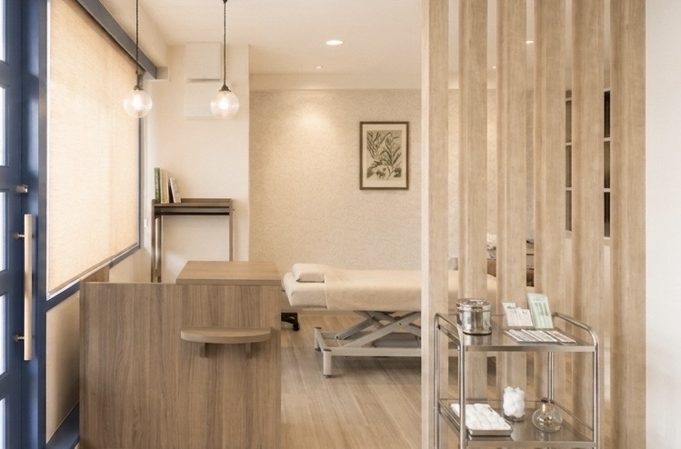
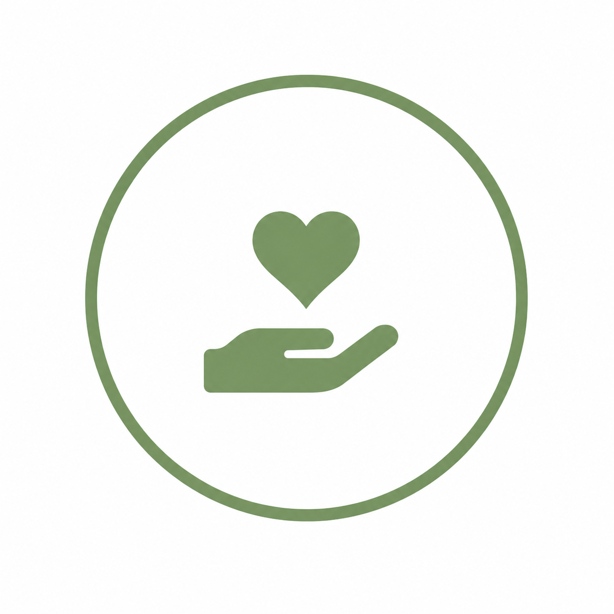
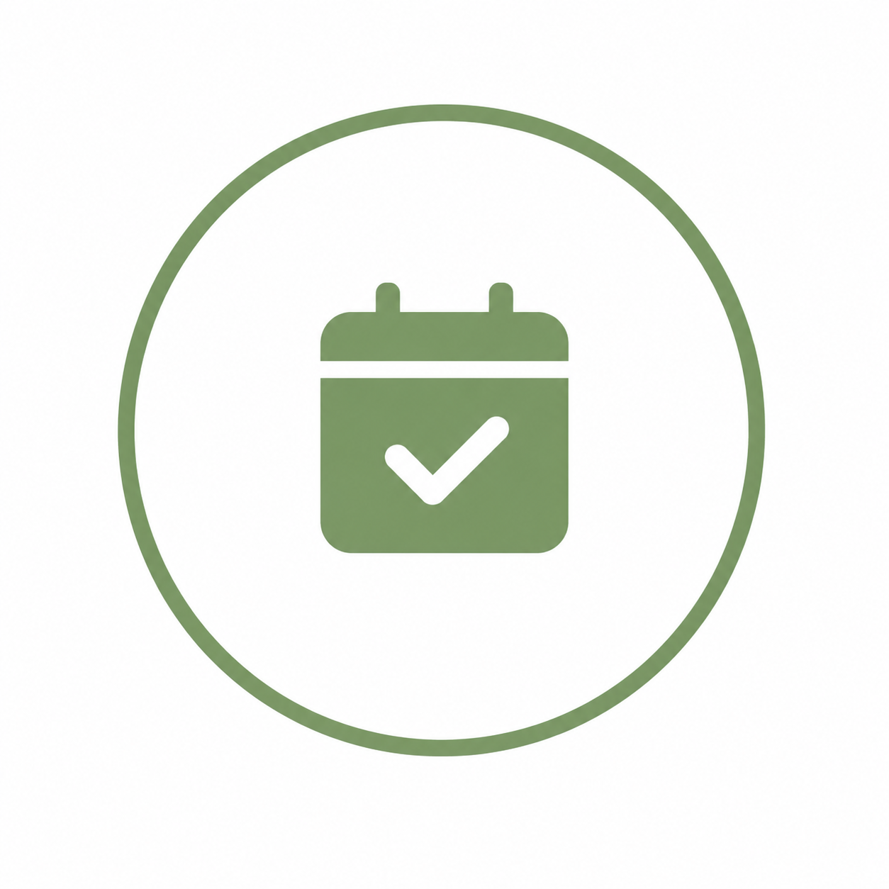
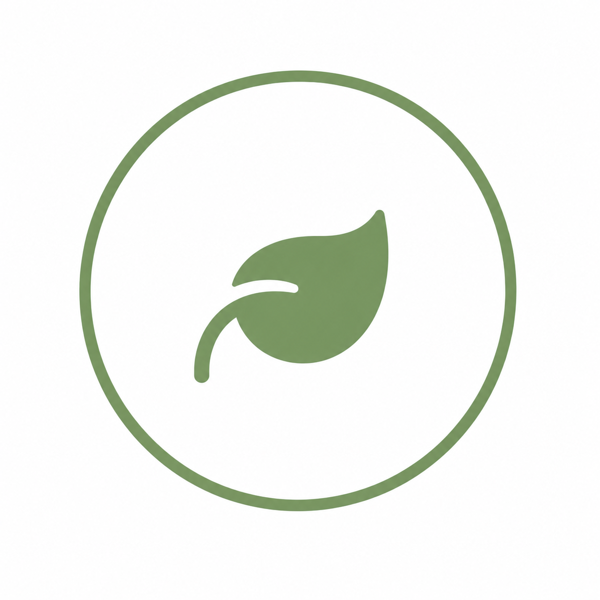

OUR VALUES
当院の4つの特徴
🌿
痛みの少ない施術
極めて細い鍼を使用し、お客様にご負担のかからないように丁寧に施術いたします。

女性も安心
女性鍼灸師が個別に個室にてカウンセリング・施術させていただきます。

完全予約制
待合室での密を避け、一人ひとり十分な時間を確保して施術いたします。

心地よい空間
木の温もりと柔らかな照明で、リラックスしてお休みいただけます。
Ｑ & Ａ
よくあるご質問
🌿
Ｑ.鍼（はり）は痛くないですか？
Ａ．当院で使用する鍼は、髪の毛ほどの極めて細い使い捨て（ディスポーザブル）の鍼です。刺激の感じ方には個人差がありますが、チクッとする痛みはほとんどなく、心地よさに眠ってしまう方も多くいらっしゃいます。
Ｑ.服装や持ち物は必要ですか？
Ａ．お着替え用のガウン、または施術を受けやすい専用の衣服をご用意しております。特に持ち物などはございませんので、普段着でお気軽にお越しいただけます。
Ｑ.当日の予約は可能ですか？
Ａ．はい、空きがある場合は当日のご案内も可能ですが、完全予約制となっておりますので、ご来院いただく前に必ずお電話・ＬＩＮＥ・ＷＥＢ予約サイトより空き状況のご確認とご予約をお願いいたします。
ACCESS & HOURS
アクセス・診療時間
🌿
| 診療時間 | 月 | 火 | 水 | 木 | 金 | 土 | 日・祝 |
|---|---|---|---|---|---|---|---|
| 9:00~12:00 | 〇 | 〇 | - | 〇 | 〇 | 〇 | - |
| 15:00~19:00 | 〇 | 〇 | - | 〇 | 〇 | 〇 | - |
※土曜午後の診療は休診となります。
※水曜・日曜・祝日は終日休診日です。
【住所】〒273-0000 千葉県船橋市湊町99-99
【アクセス】ＪＲ「船橋駅」南口徒歩20分
【駐車場】店舗目の前に専用駐車場1台完備